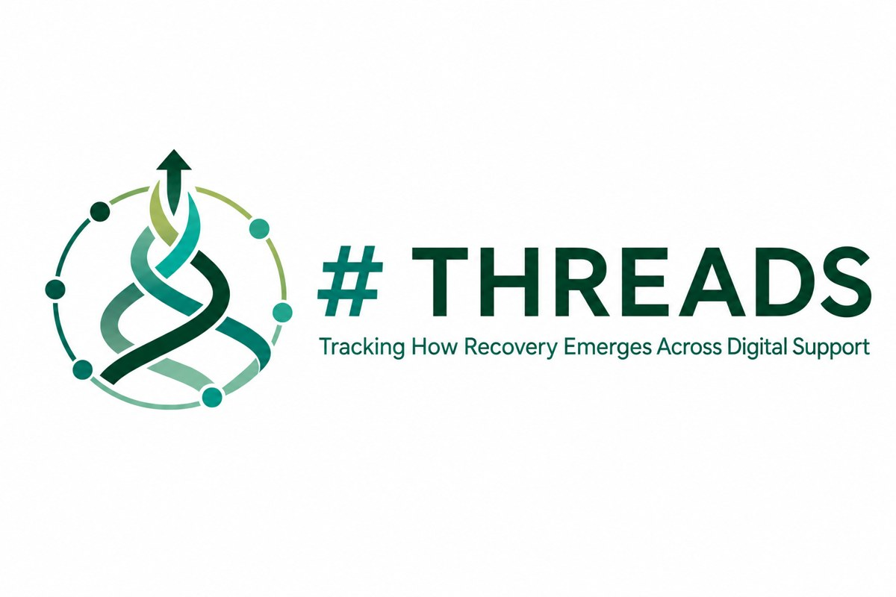

Education
- Ph.D., Applied Developmental Psychology Fordham University · 2024
- M.A., Social Sciences University of Chicago · 2017
- B.S., Psychology University of Washington, Seattle · 2015
Xiangyu Tao, Ph.D.
I am a Postdoctoral Associate at the Rutgers Addiction Research Center (Department of Psychiatry, Robert Wood Johnson Medical School), working with Dr. Kristina M. Jackson.
My research examines how digital media and online communities shape mental health, substance use, and recovery across development. I combine intensive longitudinal and person-centered methods with AI and natural language processing. Empirical research ethics is integral to this work. My ethics agenda asks where community members, researchers, and research ethics reviewers agree or differ, and how their perspectives should inform research decisions, including the use of AI with public online recovery data.
Current research

I lead this NIDA-funded K99/R00 project, combining AI and community co-production to understand how communication in online communities shapes substance use recovery.
Fewer than a quarter of U.S. adults with substance use disorder receive treatment, and many turn instead to online recovery communities such as r/stopdrinking. Paradoxically, heavier involvement in these communities has been linked to higher relapse risk, which raises the question at the heart of #THREADS: what is actually being said in them? A key distinction the project draws is between genuine peer support and co-rumination (repetitively rehashing and dwelling on distress together), two patterns that look alike on the surface but may have opposite consequences for recovery.
To answer this at scale, I am analyzing a corpus of roughly 1.4 million comments and 54,000 posts from eight recovery subreddits, using large language models validated against human-coded gold-standard data. The work is guided by co-production: a community advisory board of people with lived recovery experience (VOICES) helps shape the codebook, interpret findings, and keep the analysis grounded in real recovery. In the R00 phase, I will follow recovery-subreddit users longitudinally to test how their communication profiles predict recovery outcomes over time. (NIH RePORTER · Rutgers BHI announcement)
Alongside #THREADS, I study day-to-day links between online contexts and alcohol and other substance use in young adults using intensive longitudinal data. My doctoral work, with Dr. Celia B. Fisher at Fordham, examined how online racial discrimination and digital coping shape mental health and substance use among youth of color.
Recent news
- 2026New paper with Y. Ni and L. Jiang in Journal of Applied Developmental Psychology on online civic engagement, civic development, critical online literacy, and mental health among adolescents and young adults. Paper
- Sep 2026New paper in press in Psychology of Addictive Behaviors: social jetlag and alcohol use in adolescents, using a random intercept cross-lagged panel analysis. Citation
- Sep 2026New paper published online in International Journal of Human–Computer Interaction: modeling adolescents’ daily social media engagement patterns and exposure to alcohol-related content using multilevel latent class analysis. Paper